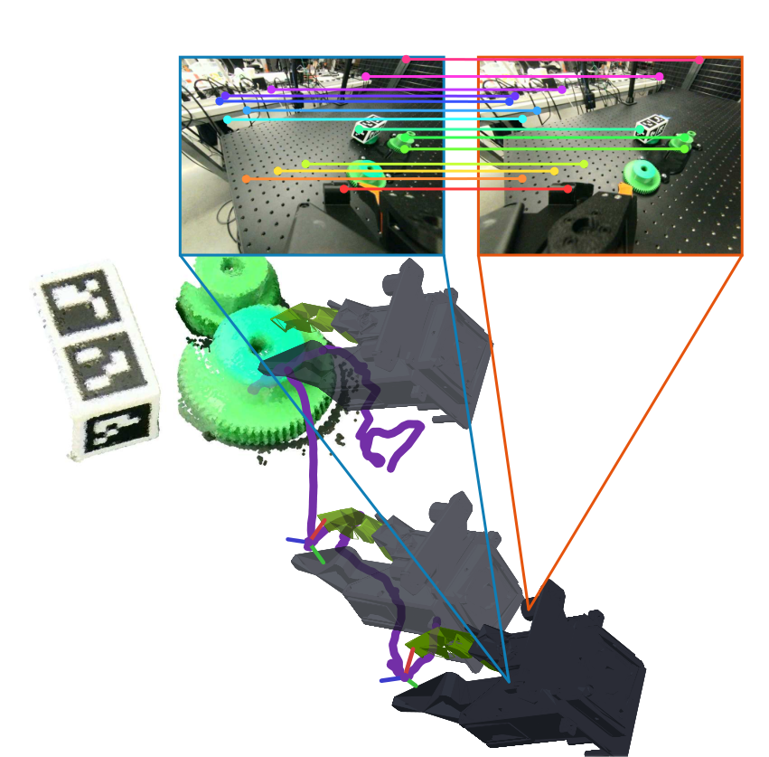
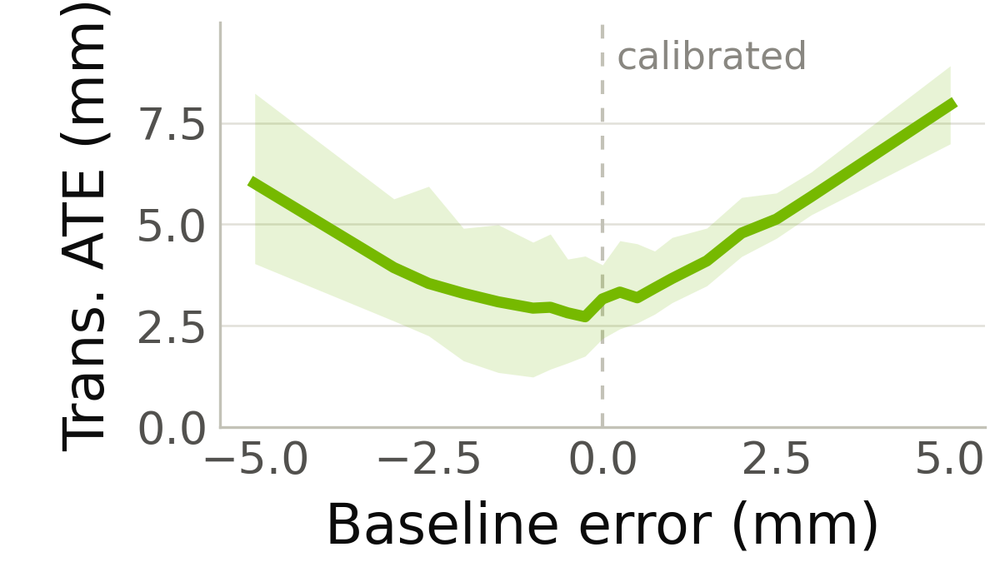
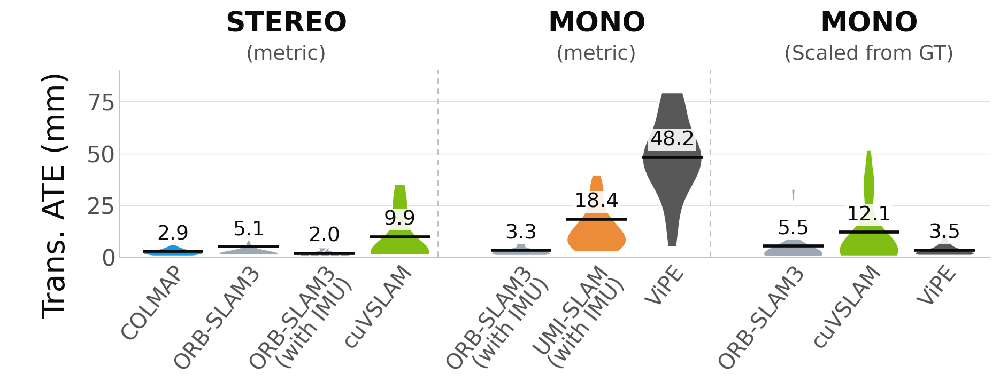

目录 · 10 节
1它到底在解决什么问题？2整体流程3为什么双目能直接给出尺度？4硬件：为什么要让采集和部署用同一只夹爪？5评测集：怎么知道轨迹算得准不准？6实验结果：双目到底好多少？7轨迹准不准，真的影响策略吗？8我认为它的局限9一个机器人团队可以怎么试10一句话结论用手持夹爪（UMI）在野外采机器人示教数据已经很流行，但动作标签准不准，取决于从腕部相机视频里还原夹爪轨迹的那一步。原版 UMI 用单目相机加 IMU（惯性测量单元），单目看不出真实尺度，还要预先建图、贴标记物来稳住。OpenJaws 把相机换成一台百元级的双目相机，两只镜头的间距是标定好的，三角化直接给出真实尺度。在作者新做的带真值评测集上，只比两者都能跟住的片段，双目重建的轨迹误差约 2.9 毫米，原版方案是 18.4 毫米，而且原版平均只跟住 37% 的帧。整套夹爪约 400 美元，软硬件全部开源。
做机器人数据采集和操作策略的团队值得读这篇，原因是它把“采来的动作标签到底有多准”第一次变成了一个可以量化的问题。核心思想一句话：用标定好的双目相机负责给出真实尺度，用开源的 SLAM（边定位边建图）或 SfM（从一组图像同时恢复相机位姿和场景结构）工具负责还原轨迹，再用同一只夹爪、同一个标准法兰接口完成采集和部署，省掉建图、标记物和重新标定。我认为它最有价值的是那个带真值的评测集，以及“定位误差从约 10 毫米加到 30 毫米以上，策略成功率从 90% 掉到 30%”这个对照实验；硬件本身的创新不大，胜在开源和省事。
它到底在解决什么问题？
先说 UMI 是什么。它是一只人拿在手里的夹爪，腕部装一台相机。人拿着它在厨房、仓库里直接做抓取、插拔，不需要机器人在场。事后从视频里算出夹爪每一帧的位置和朝向，再切成一小段一小段：每段里后续各帧相对这一段起始时刻的位姿变化，就是训练策略用的动作标签。所以，轨迹算错了，动作标签也会跟着错。不过因为标签是相对每段起点算的，整条轨迹慢慢漂走这类绝对误差会被抵消掉一部分；尺度错（比如把 10 厘米算成 18 厘米）则会原样留在标签里。
用一个具体例子说明（示意）。人拿夹爪从桌边向前伸 10 厘米去夹一块积木，三种还原轨迹的办法会得到不同的标签：
| 还原轨迹的办法（示意） | 尺度从哪来 | 算出来的前伸距离 | 额外准备 |
|---|---|---|---|
| 单目视觉，不加 IMU | 无法确定 | 约 18 厘米，形状对但大小错 | 无 |
| 单目加 IMU（原版 UMI） | IMU 的加速度 | 约 10 厘米，但常常跟丢 | 先录一段建图视频，并放一块已知尺寸的标记物 |
| 双目（OpenJaws） | 两只镜头的固定间距 | 约 10 厘米 | 只需一次相机标定 |
第一行的 18 厘米不是乱编的比例。论文里的单目学习方法 ViPE（一个从视频估相机位姿的神经网络）在这个场景下，需要把整条轨迹缩小到约 0.556 倍才对得上真值，意思是它把距离估大了将近一倍。轨迹的形状没问题，但机器人照着这个标签伸手，会伸过头。
单目加 IMU 理论上能补上尺度，实际上很脆弱。原版 UMI 的作者自己就发现，标准的 ORB-SLAM3（一个经典的开源 SLAM 系统）在手持快速运动下初始化很慢，经常一整段视频都算不出位姿。他们的补救是先单独录一段视频把场景建好图，建图时在场景里放一块已知尺寸的标记物，帮单目加 IMU 定准尺度、完成初始化，正式采示范时不需要它；论文里把这套改法叫 UMI-SLAM。问题在于，建图那一刻的场景和后来操作时的场景常常不一样，物体被挪过之后地图就不准了。
整体流程
OpenJaws 的链路很短，可以按数据流向分成五步：
- 采集：人拿着夹爪做示范，同时录下左右两路广角图像、夹爪开合角度和 IMU 读数。
- 预处理：先去掉鱼眼镜头的畸变，再把左右图像校正到同一水平线上，方便逐行找对应点。
- 遮挡处理：用 SAM（Meta 的通用图像分割模型）把画面里的夹爪手指分割出来，让定位算法忽略这些区域。手指会动，如果当作背景特征去匹配，会把相机自己的运动算错。
- 定位：把校正后的双目图像交给现成的开源工具，比如 COLMAP（离线的 SfM 重建）、ORB-SLAM3 或 cuVSLAM（NVIDIA 的 GPU 加速视觉 SLAM），得到带真实尺度的相机轨迹。
- 训练和部署：把轨迹切成一段段动作，每段都表示成相对这段起始时刻夹爪位姿的变化，用来训练 Diffusion Policy。部署时把同一只夹爪直接装到机械臂法兰上。相机位姿换算到夹爪末端（TCP）用的固定变换怎么得到，夹爪开合怎么并入动作标签，论文没有说明；部署时策略的观测是什么、相对动作怎么换成机器人的执行目标、线上还要不要跑双目定位，论文也没有说明，只说用的是和原版 UMI 相同的 Diffusion Policy 和相对末端动作空间。

这套设计的关键分工是：尺度交给硬件，轨迹交给开源算法。双目相机的两只镜头间距是标定好的已知量，算法在左右图里找到同一个点、三角化，就能得到真实距离；剩下的工作是定位和优化，把各帧串成轨迹。下面拆开讲。
为什么双目能直接给出尺度？
单目相机拍到的只是方向。一个 1 厘米的积木放在 10 厘米外，和一个 10 厘米的盒子放在 1 米外，在画面里可能一样大。两台相机隔开一段已知距离一起拍，同一个点在两张图里会错开几个像素，这个错开量叫视差。离得越近，视差越大。
这里 是点到相机的距离， 是以像素计的焦距， 是两只镜头的间距（基线）， 是视差。直觉是：基线是一把内置的尺子，视差告诉你这把尺子在画面里看起来有多长。
下面用具体数字算一遍，其中焦距和视差是示意值。OpenJaws 的基线标定值是 59.7 毫米，假设焦距 300 像素，某个点的视差是 30 像素，那么它的距离约为 300 × 59.7 ÷ 30 ≈ 597 毫米。因为 是真实长度，算出来的 也是真实长度，不需要 IMU 来补。 Hoot 说

单目：只看一张图
- 积木在画面里
- 300 × 10 ÷ 100 = 30 像素
- 盒子在画面里
- 300 × 100 ÷ 1000 = 30 像素
- 能推出的距离
- 分不清：放大 10 倍再远 10 倍，画面不变
所以单目轨迹只有形状，尺度要靠 IMU 或标记物补。
双目：两张图 + 已知基线 59.7 毫米
- 积木的视差
- 300 × 59.7 ÷ 100 ≈ 179.1 像素
- 盒子的视差
- 300 × 59.7 ÷ 1000 ≈ 17.9 像素
- 能推出的距离
- 分得清：100 毫米 vs 1000 毫米
基线是真实长度，算出的距离就是真实长度。
示意：焦距 300 像素，积木 10 毫米放在 100 毫米外，盒子 100 毫米放在 1000 毫米外；基线用论文标定值。 出处: 投影：像素大小 = f × 物体大小 ÷ Z；视差 d = f × B ÷ Z（正文公式）；B = 59.7 毫米来自论文标定
这也说明了基线标定为什么重要。 和 成正比，基线写错 1%，整条轨迹就整体放大或缩小 1%。作者做了一个敏感性实验：不重新校正图像，只把交给 cuVSLAM 的基线数值在 −5 到 +5 毫米之间改动。标定值附近的平均平移误差约 3 毫米；改到 −5 和 +5 毫米时，误差分别升到 6 毫米和 8 毫米。旋转误差在整个范围内只变化 0.1 度。基线只影响轨迹的大小，不影响形状，这和上面的公式一致。

硬件：为什么要让采集和部署用同一只夹爪？
原版 UMI 采数据用的是手持夹爪，部署时却要换成一只商用电动夹爪（WSG-50），再给它配一副同样的手指。两只夹爪的行程、手指形状、相机到夹爪中心点的相对位置都要对齐，差一点，策略学到的“张开多少、伸到哪里”就和真机对不上。论文把这类问题统称为 UMI 到真机的落差，并指出做得最好的几套 UMI 系统都没有开源。
OpenJaws 的做法是只造一只夹爪，既能拿在手里采，也能直接装到机械臂上。几个具体选择各有原因：
- 接口用 ISO（国际标准化组织）的 9409-1-50-4-M6 法兰标准。很多协作机械臂的末端都是这个规格，夹爪拧上去就能用，相机和夹爪中心点的相对位置在采集和部署时完全一样，因此不需要重新标定。
- 只用现成模块：一个 Dynamixel 舵机、一块 Arduino 系列控制板、一个 IMU 扩展板和一台双目相机，结构件全部 3D 打印。作者刻意不做定制电路板，因为别人要复现就得先去打板，门槛会高很多。
- 相机选全局快门。手持运动很快，卷帘快门会让画面上下错位，特征点就对不准。
- 手指用 TPU（热塑性聚氨酯，一种像橡胶的软塑料）打印，抓东西时自带一点柔顺性。
按 2026 年 10 月的美国零售价，整套物料约 399 美元，重 0.408 千克；原版 UMI 连同部署夹爪约 5,389 美元、0.650 千克。这个差距说明，采集设备的成本大头原来在部署夹爪和专用定位方案上，而不是采集本身。
评测集：怎么知道轨迹算得准不准？
以前没有专门为 UMI 场景做的定位评测，自动驾驶和室内重建的 SLAM 评测集，运动方式和距离尺度都和手持操作差得很远。作者因此做了 UMI-Loc-Bench-v1：9 个任务，每个任务 10 段手持示范，共 90 段，包括叠积木、插齿轮、拧扳手、从货架和料箱里取物、插 U 盘、放笔、捡糖果等。
真值来自场景里一块固定的方块，方块各面贴着 ArUco 标记（一种印刷的二维码式图案，相机一看到就能算出自己相对它的精确位姿）。为了公平，评测前会把方块在两路图像里都遮掉，被评的定位算法不能借它来跟踪。
误差指标用的是 ATE（绝对轨迹误差）：先把估计轨迹整体平移旋转到和真值对齐，但不允许缩放，再算每一帧的位置偏差。不允许缩放这一点很关键，因为尺度错了正是要抓的问题。另外还看两个量：覆盖率，即一段示范里有多少帧算出了位姿；以及每段示范的处理时间。
实验结果：双目到底好多少？
先看最公平的比较。原版 UMI-SLAM 只能跟住一部分帧，所以作者把所有方法都限制在 UMI-SLAM 跟住的那些片段上比，共 27 段示范。所有方法用的是同一批片段；最后一列覆盖率是整个评测集上有位姿的帧所占比例，ViPE 那行例外，记的是整段示范能否跑通。所以误差列只说明在 UMI-SLAM 能跟住的那部分片段上谁更准，覆盖率列才反映谁能跟住整段示范。
| 方法 | 输入 | 共同片段平移误差 | 共同片段旋转误差 | 平均覆盖率 |
|---|---|---|---|---|
| COLMAP | 双目 | 2.9 毫米 | 0.4 度 | 基本全程 |
| ORB-SLAM3 | 双目 | 5.1 毫米 | 1.3 度 | 100% |
| ORB-SLAM3 | 双目加 IMU | 2.0 毫米 | 0.5 度 | 18% |
| cuVSLAM | 双目 | 9.9 毫米 | 2.5 度 | 基本全程 |
| UMI-SLAM | 单目加 IMU，预建图 | 18.4 毫米 | 4.0 度 | 37% |
| ViPE | 单目，不缩放 | 48.2 毫米 | — | 90 段里 89 段跑通，跑通的段几乎每帧都有位姿 |

这张表说明了三件事。
第一，双目方案又准又稳。COLMAP 的误差约为 UMI-SLAM 的六分之一，而且不需要建图和标记物，几乎每一帧都能算出位姿。
第二，IMU 在这个场景里是把双刃剑。同样是 ORB-SLAM3，加上 IMU 后误差从 5.1 毫米降到 2.0 毫米，可覆盖率从 100% 掉到 18%，大部分时间都跟丢了。原因是手持操作的工作空间很小、动作又急，IMU 的初始化和参数都要专门调。局部更准、整体却算不出来的轨迹，对采数据没有用。
第三，神经网络单目方法学到了形状，没学到尺度。ViPE 在 90 段里跑通了 89 段，用真值缩放后误差只有 3.5 毫米，和双目相当；但不缩放时是 48.2 毫米。作者的解释是 ViPE 主要在室外和房间尺度的数据上训练，腕部相机离物体只有几十厘米，超出了它见过的范围。
再看全程轨迹。只比纯双目方法时，COLMAP 最准（5.2 毫米、0.8 度），ORB-SLAM3 是 7.4 毫米，cuVSLAM 是 12.4 毫米。但处理一段示范，COLMAP 要 836 秒，cuVSLAM 只要 34.8 秒，因为 COLMAP 最后要做一次全局优化，把所有帧放在一起反复调整。作者训练策略时选的是 cuVSLAM，用约两倍多的误差换来二十多倍的速度。对要处理成千上万段示范的团队，这个取舍是合理的。
轨迹准不准，真的影响策略吗？
作者用同一只夹爪在 UR10（优傲的一款六轴协作机械臂）上训练了两个任务：叠积木采了 200 段示范，抓放采了 50 段，定位用 cuVSLAM，策略是 Diffusion Policy，动作仍是每段相对起始时刻的夹爪位姿变化。每个任务在不同初始条件下测 10 次，都成功 9 次。抓放失败的一次是夹爪打滑，叠积木失败的一次是中途掉了积木。部署时夹爪直接拧到机械臂上，没有重新标定。
更有意思的是对照实验。作者在训练数据的轨迹上人为加漂移：每隔 10 到 30 帧，以 8% 的概率在当前和之后所有帧上叠加一个最大 10 厘米的随机偏移，模拟 SLAM 偶尔跳一下再也回不来的情况。这样训练数据的平移误差从约 10 毫米升到 30 毫米以上，策略成功率从 90% 掉到 30%，失败多是抓偏打滑，或者放的位置不准撞到场景。
这说明相对动作表示并不能把定位误差完全吸收掉。很多人以为 UMI 的动作只看一小段内的相对运动，绝对漂移无所谓；可一旦漂移发生在一段动作中间，那一段的相对运动本身就错了。
作者还演示了把示范变成仿真场景：给一个大模型 agent 一段插齿轮的示范视频和夹爪、零件的模型，让它自己摆出仿真场景并回放示范，10 段里有 7 段回放成功。这部分只有一个任务，我把它当作附带的可能性，不当主要贡献。
我认为它的局限
第一，策略验证很薄。只测了两个任务，每个任务 10 次，也只用了一台机械臂和一种策略。90% 和 30% 的对比方向很清楚，但因为样本只有 10 次，多成功或多失败一两次，成功率就会差出 10 到 20 个百分点。
第二，加噪实验的噪声形态比较极端。最大 10 厘米的阶跃偏移更像跟丢后重定位失败，而不是真实 SLAM 常见的缓慢漂移。它证明了“很差的定位会伤害策略”，但没回答“2.9 毫米和 9.9 毫米之间的差别对策略有多大影响”，这恰恰是选 COLMAP 还是 cuVSLAM 时最想知道的。
第三，目前只做单臂。双臂需要同时定位两台独立移动的双目相机，并把它们放进同一个坐标系，作者把这留给了后续工作。评测集也只有 90 段、9 个任务，场景多样性有限。
一个机器人团队可以怎么试
- 先用评测集测自己现有的方案。如果已经在用单目 UMI 采数据，用 UMI-Loc-Bench-v1 的思路在自己的场景里放一块 ArUco 方块，量一下现有轨迹的误差和覆盖率。误差在十几毫米、覆盖率不到一半，就值得换。
- 只换相机，不换别的。把腕部相机换成全局快门双目，用 cuVSLAM 批量处理，对比同一批任务上的覆盖率和误差。判断标准很简单：覆盖率是否接近全程，误差是否降到个位毫米。
- 再换夹爪接口。如果机械臂是 ISO 法兰，试着让采集和部署用同一只夹爪，看能否省掉部署前的标定步骤。
- 最后做自己的加噪实验。在自己的任务上按不同幅度给轨迹加噪，画出定位误差和策略成功率的关系，据此决定离线处理用快的 cuVSLAM 还是准的 COLMAP。
一句话结论
动作标签的质量是手持采集的天花板，用一台标定好的双目相机拿到真实尺度，比在单目方案上叠 IMU、建图和标记物更简单也更可靠。
| 维度 | 评价 |
|---|---|
| 问题重要性 | 高。手持采集正在成为机器人数据的主要来源之一，标签误差直接决定策略上限 |
| 方法创新性 | 中。双目定位本身是成熟技术，新意在把它和开源夹爪、标准接口、评测集打包成一套 |
| 实验证据 | 中。定位评测扎实，有真值和多种基线；策略部分只有两个任务、每个 10 次 |
| 工程成本 | 低。约 400 美元物料，全部现成模块和开源软件 |
| 是否值得尝试 | 值得。在用单目 UMI 的团队，换相机加离线 cuVSLAM 是很便宜的一步 |
读完这篇，你觉得
夜读鸮记下了，谢谢你的反馈。
点一下即可，无需登录；再点一次撤回。只统计匿名次数，不记录你是谁。
讨论
欢迎补充实验细节、复现经验或不同看法。需 GitHub 登录。
正在加载讨论…